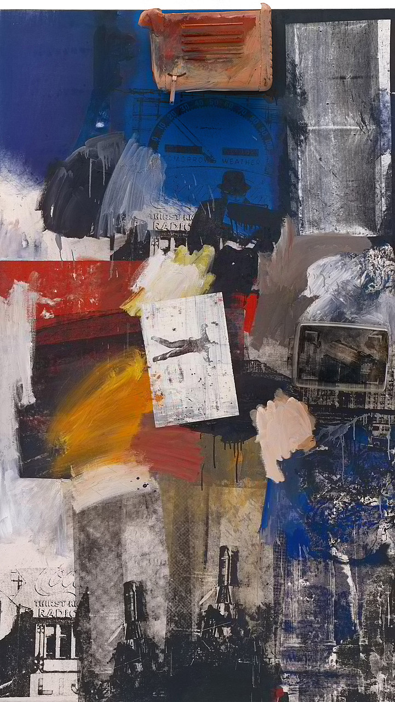
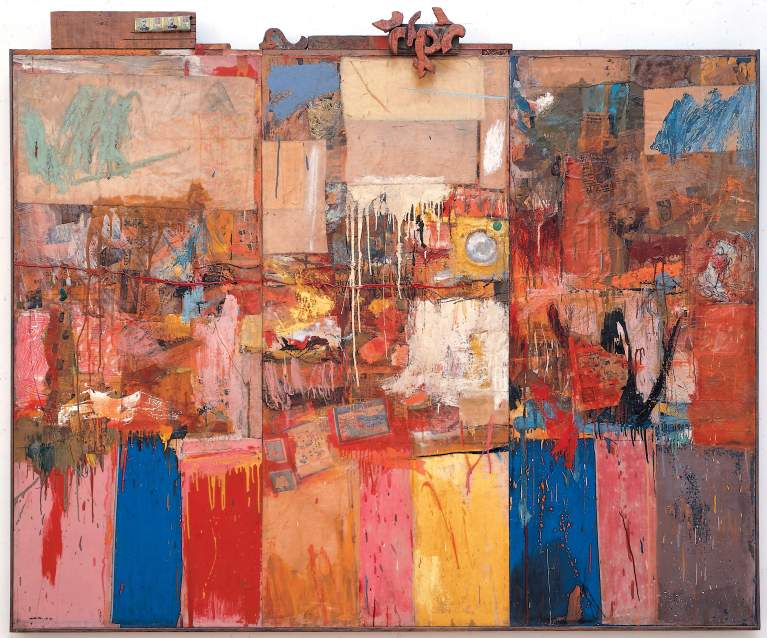

Neo-Dada
What is it?
Neo-Dada is an art movement of the 1950s and 60s that continued from Dada influence of wanting to connect art and everyday life. Neo-Dada, like its predecessor, uses “readymades,” which are just everyday items, random objects, and media in their works. The main difference here would be the cadence; Dada works were more openly “anti-art” while Neo-Dada is said to be more playful and ironic. You can see how art moves from one movement to another with art getting more facetious and colorful as time goes on. The use of media and US influence, we see the Pop Art movement on the horizon from Neo-Dada.

Robert Rauschenberg
Robert Rauschenberg, born October 22, 1925, in Port Arthur, TX, is what many call a forerunner of many movements while Robert himself stayed free of a particular movement. He has a quote saying, “Painting relates to both art and life. Neither can be made.” He believed that, painting for him specifically, art should merge more closely with everyday elements of our lives. Robert is known for working with many different mediums, from printmaking to painting, all the way to sculpting. At times he would mix these different mediums together like with “Red Paintings.” Here he uses red paint on newspapers and fabrics in different ways the paint was applied, using brushstrokes, drips, or squeezing directly from the tube. Robert is just one of the many figureheads as we bridge closer to modern art challenges.
